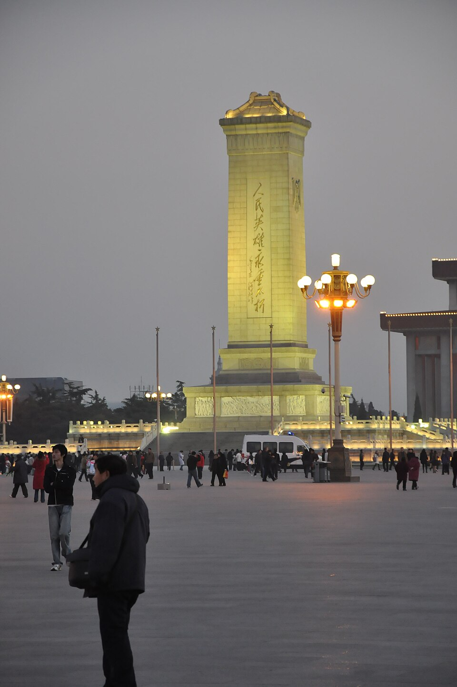
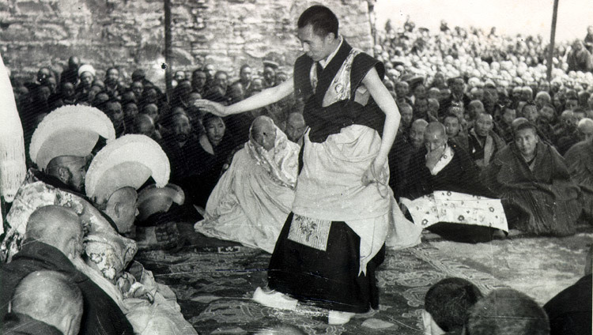
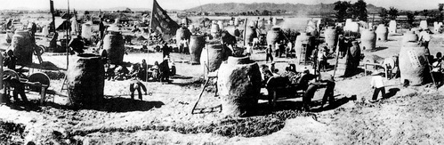
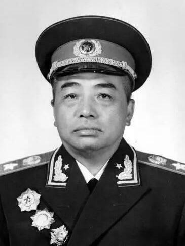
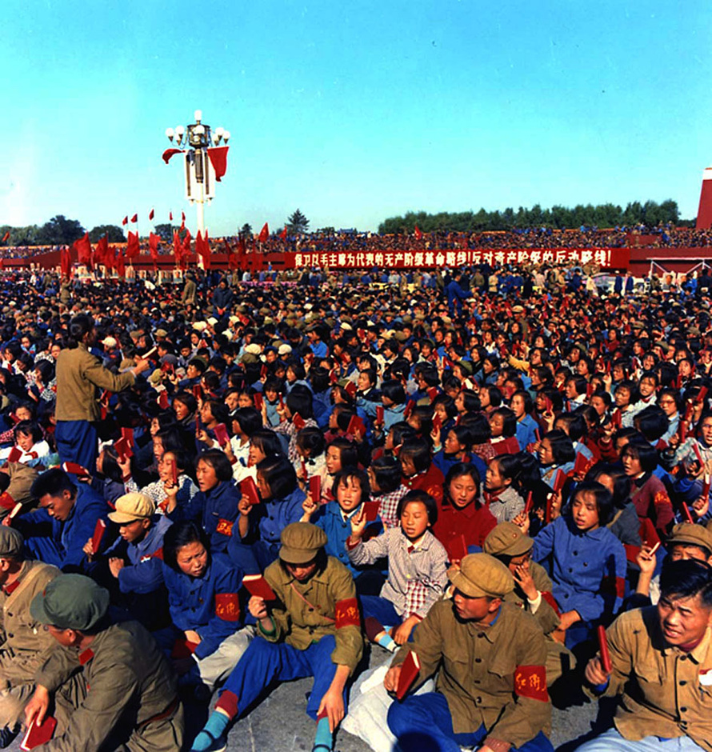
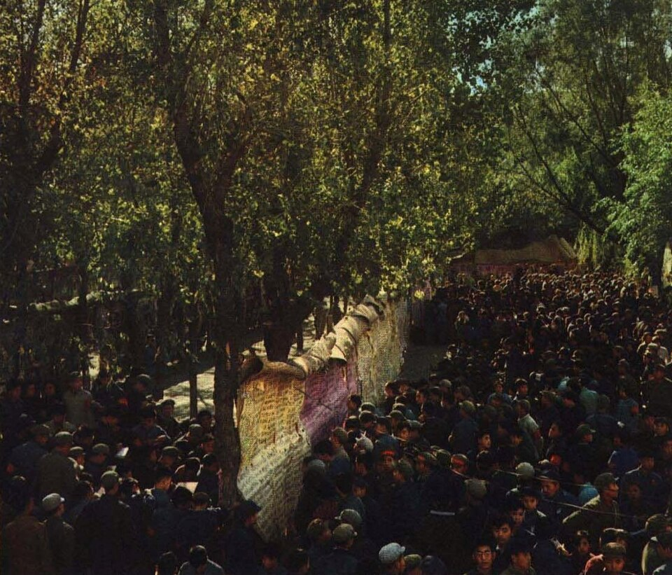

Unit 15 · Study guide · China
China Under Mao 毛泽东时代
The People's Republic, 1949–1976
ContentsOverview
The unit in one paragraph
pp. 472, 488–489
By the end of 1949 the Communist Party controlled almost all of China, and Mao Zedong had proclaimed the People's Republic of China. The party quickly restructured the country. It mobilized people to redistribute land, build heavy industry, reform marriage, and unmask "counterrevolutionaries," and it redistributed wealth and power on a vast scale. New factories, railroads, schools, hospitals, and reservoirs went up. At the same time, the state came to decide what farmers grew, where children studied, what people read, and where they could live or travel. Mao launched a series of movements to speed the move to communism; three took especially heavy tolls: the Hundred Flowers campaign, the Great Leap Forward, and the Cultural Revolution, whose most radical phase (1966–1969) turned students and workers against the party itself.
Until the late 1970s Western scholars had little access to China and relied on official statements and interviews with refugees. Since the 1980s, new sources have shown more complex and varied pictures. Questions now include:
- Can the excesses of the Great Leap and the Cultural Revolution be fully blamed on Mao's poor grasp of reality? How could one person make such a difference?
- How did policies set at the center play out locally, and how did local cadres (party functionaries) get people to comply?
- What were the consequences of vilifying intellectuals?
- How did day-to-day life change for ordinary people in villages and towns?
Soviet loans and advisers, the First Five-Year Plan, land reform and collectivization, the Korean War. Real gains in literacy, health, and employment; strong support and optimism by 1957.
The Great Leap Forward and a famine with some 30 million "excess" deaths, the split with the Soviet Union, and the Cultural Revolution. Mao's death in 1976 ends the era.
Timeline at a glance
The party in power
pp. 473–474
The problems of 1949 p. 473
After forty years of fighting, the economy was in shambles. Inflation was rampant; railroads were torn up, bridges destroyed, harbors clogged with sunken ships, and millions displaced. Many people running essential services had been Japanese collaborators or Nationalist appointees and could not be trusted. Chiang Kaishek had moved much of his army to Taiwan and still claimed to be China's legitimate ruler.
Help from the Soviet Union p. 473
In December 1949 Mao went to Moscow to confer with Stalin. He stayed nine weeks, his first trip abroad, and arranged Soviet loans and technical help. More than 20,000 Chinese trainees went to the Soviet Union, and some 10,000 Russian technicians came to China to set up 156 Soviet-designed heavy industrial plants. On the Soviet model, agriculture was taxed heavily to pay for them.
First Five-Year Plan targets, 1953–1957 p. 473
Taking over the cities pp. 473–474
When the Red Army entered the cities, its peasant soldiers stopped looting and rounded up beggars, prostitutes, opium addicts, and petty criminals. They set up street committees, told to rid the cities of flashy clothes and other "decadence." But illiterate soldiers could not run urban enterprises, so the party combined takeover and control:
Taken over outright
The banks (which brought inflation under control within a year), and key industries such as the railroads and foreign trade.
Owners kept, under orders
Capitalists and managers stayed in place but had to follow party directives.
Squeezed out
Smaller plants, stores, and restaurants came under government control through its hold on supplies and labor.
In 1951–1952 a large campaign weeded out the least cooperative capitalists. City residents were mobilized to accuse merchants and manufacturers of bribery, tax evasion, theft of state assets, cheating on labor or materials, and stealing state economic secrets. In April 1952 alone, 70,000 Shanghai businessmen were investigated and criticized, often by their own relatives and friends. Those who confessed paid restitution, often by giving the state shares, which turned their firms into joint government–private ventures; many stayed on as government-paid managers, discredited before their staff. pp. 473–474
How the state was organized p. 473
The party set out to build a "New China" that would empower peasants and workers and limit landlords, capitalists, intellectuals, and foreigners. It taught that struggle, revolution, and change were good, and compromise, deference, and tradition weak. The Soviet political model was adopted with changes: China was a "people's democratic dictatorship," represented by irregularly held People's Representative Congresses.
Workers, poor and rich peasants, and the national bourgeoisie.
Landlords and certain classes of capitalists.
Real power lay with the party. The People's Liberation Army answered to the party, through its Military Affairs Commission, not to the government. Click a level of the party to see what the book says about it.
Mao was the paramount leader, treated almost like an emperor. In 1953, aged sixty, he was chairman of the party, of the Military Affairs Commission, and of the PRC. Veteran organizers ran the details: Zhou Enlai coordinated foreign policy and Liu Shaoqi economic policy. p. 473
Ideology and social control
pp. 474–475
The new leaders called their victory "the liberation": the people were freed from the yoke of the past to build a socialist, egalitarian, forward-looking nation that would show the world how socialism could lift the masses out of poverty. That required correct ideology, "Mao Zedong Thought." Because Mao's ideas changed over time and put practice above theory, no one could be sure how he would view an issue; as long as he lived, he alone ruled on what was correct. p. 474
Spreading the message p. 474
- Propaganda departments took over publishing; schools and colleges came under party supervision and a Soviet-style Ministry of Education.
- Mass organizations such as the Youth League, the Women's Federation, and the Labor Union Federation. Their organizers were to learn from the masses, watch them, and rally them behind new policies.
- Banners and posters with party slogans covered meeting halls and other buildings.
Attacking the old p. 474
Traditional religion was labeled "feudal superstition." The 1950 Marriage Reform Law gave young people the right to choose their spouses, wives the right to seek divorce, and wives and daughters property rights. It went little further than the Nationalists' Civil Code of 1930, but it had far more impact because campaigns publicized it and promised women party support. In its first five years, several million marriages were dissolved, most at the wives' request. Collectivization shrank family property, schools and the Youth League weakened parents' authority, and women in visible posts, from street committees to university faculties and the upper party, gave women new role models.
A new capital p. 474
Beijing's huge walls were torn down as obstacles to traffic. The area south of the old palace was cleared to create Tiananmen Square, flanked by two huge Soviet-style buildings: the Great Hall of the People and the Museum of Chinese History. Mass May Day and National Day rallies there linked China visually with communist countries everywhere.
The Monument to the People's Heroes
The old palace became a museum and the backdrop for mass rallies. Across from it, after years of planning, a new monument went up:
- A ten-story obelisk, with a quotation in Mao's own hand on the front and one written by Zhou Enlai on the back.
- Ten bas-reliefs at the base show the people's struggles from the Opium War to the final stage of the "War of Liberation." The largest, on the front, shows the PLA crossing the Yangzi River.
- The art was made collaboratively, not by named artists. The figures were not portraits of real people but idealized revolutionaries with the same heroic determination.
- This "international socialist-realist" style also appeared in posters, book illustrations, and paintings.

The work unit p. 474
The party's most effective tool of social and ideological control was the danwei (work unit).
The party brought schools and health care to more and more of the urban and rural poor. Illiteracy fell quickly and life expectancy rose. Jobs were found for everyone, and everyone got housing of some sort.
The Korean War and the United States as chief enemy
pp. 475–476
The new government had less than a year before war in Korea. After World War II, the Soviet Union dominated Korea above the 38th parallel and the United States below it. Mao knew his development plans needed peace, but Stalin approved North Korea's plan to invade the South. (Unit 16 tells the war from Korea's side.)
- 1June 1950. North Korea invades South Korea.
- 2October 1950. U.S. forces, fighting under the United Nations flag, cross the 38th parallel and head for the Yalu River, the border with China.
- 3Late October. Chinese "volunteers" under Peng Dehuai secretly cross the Yalu, using no lights or radios.
- 4Late November. They surprise the Americans and soon force them back south of Seoul. In all, China sends more than 2.5 million troops, all its tanks, and more than half its artillery and aircraft.
- 5To 1953. Stalemate. Peace talks drag on, largely because China wants all prisoners returned, but 14,000 beg not to be sent back.
Legitimacy: China had "stood up" and beaten back the imperialists.
About 360,000 Chinese casualties, and the end of many chances for gradual reconciliation at home and abroad.
Consequences p. 476
- The United States, now treating China as an enemy, sent the Seventh Fleet to patrol between China and Taiwan and increased aid to Chiang.
- With Taiwan holding China's seat on the UN Security Council, the United States pushed a total UN trade embargo on China and enforced it with a blockade of the coast. Self-reliance became a chief revolutionary virtue.
- When the United States helped supply the French in Vietnam, China supplied Ho Chi Minh and the Vietminh.
- Fearing spies, China expelled most remaining Western missionaries and businessmen. A 1951 campaign against "counterrevolutionaries", people who had served the Nationalist government or army, led to tens or hundreds of thousands of executions and similar numbers sent to harsh labor-reform camps. It also disarmed the population: more than 500,000 rifles were collected in Guangdong alone.
The China map in Part 5 (Figure 9) has a layer for the Korean War.
Collectivizing agriculture
pp. 476–477
Collectivization and a new local elite of rural cadres changed the lives of hundreds of millions of farmers. Since the 1930s the party had taught peasants that inequality was not natural but a perversion caused by private property, and that the old literati elite were the cruelest exploiters. That "feudal" order was to give way to a communal one where all worked together for common goals. p. 476
Land reform p. 476
In land reform, the party sent a small team of cadres and students to a village. The team cultivated the poor, organized a peasant association, picked leaders from the poorest peasants, compiled grievances, and organized struggles against the most resented. Finally it supervised the classification of every household as landlord, rich peasant, middle peasant, poor peasant, or hired hand. Class analysis was meant to be scientific, but moral judgments crept in. How should these be labeled?
- Elderly widows who rented out their meager holdings because they could not work them?
- Somewhat better-off families of veterans?
- Families that had only recently bought land with money earned in city factories?
- Families newly poor because the household head was a wastrel or an opium addict?
The uncertainty let activists help friends and punish enemies. Some villages had little surplus to share; in others violence flared, especially when villagers tried to make "landlords" reveal buried gold. Landlords and rich peasants lost their land and were punished for past offenses; a not insignificant number were executed. Land reform also created a caste-like system: descendants of "landlords" were barred from leadership, while those of poor and lower-middle peasants were favored. p. 476
From land reform to collectives pp. 476, 481
Redistribution won peasant support but did not raise productivity. For that, the party pushed collectivization step by step, from mutual aid teams to cooperatives to higher-level collectives. Use the buttons to move through the stages.
The state and the grain pp. 476–477
In 1953 the state took control of the grain market. Each collective's harvest was divided like this:
Trade between regions was redefined as criminal speculation. The state took over trade and rural markets stopped working. Many peasants, especially in poorer areas, lost sideline income from small enterprises like oil presses, paper mills, or rope factories. Traveling carpenters and craftsmen were "chained to the land." pp. 476–477
Rural cadres: the new elite p. 477
How villagers experienced each policy depended on the lowest-level cadres. In some villages literate middle peasants who knew farming became leaders; in others, toughs from the poorest families rose through zeal in denouncing landlords. A team leader had to produce a large surplus for the revolution without letting so much be taken that he lost his team's trust, and spent much time motivating members and settling squabbles. Because team leaders could rise in the party, cadre work offered social mobility far beyond anything in imperial China.
- Rural schools: children everywhere got at least a few years, cutting illiteracy dramatically.
- Basic health care through clinics and "barefoot doctors", peasants with a few months' training who could give vaccinations and antibiotics.
- Collectives took responsibility for widows and orphans with no one to care for them.
Minorities, autonomous regions, and Tibet
pp. 477–479
New China proclaimed itself a multinational state. Officially, the old view of China as a civilizing center that slowly absorbed non-Chinese peoples gave way to a vision of distinct ethnic groups joined in a collaborative state. "Han" became the term for the most advanced group, and "Chinese" was stretched to cover every group in the People's Republic. p. 477
The policy was copied from the Soviet Union, which used it to justify keeping the lands the czars had acquired. It did the same for China in Tibet and Xinjiang, which the Qing had acquired but which had been independent since 1911. Mongolia had also broken away, but it had a communist government under Soviet domination from the 1920s, so China did not challenge its independence. p. 477
Counting the nationalities p. 477
Identifying and labeling minority nationalities became a major state project in the 1950s. Chinese linguists and social scientists applied Stalin's four criteria for a "nationality":
- 1400+ groups investigated.
- 2Most classified as local branches of larger ethnic groups.
- 355 recognized minority nationalities, about 7 percent of the population. Some were clear cases, like the Tibetans and Uighurs, with their own languages and territories. Others were matters of degree, like the Hui (Chinese-speaking Muslims scattered across the country) and the long-sinified Zhuang of Guangxi.
Where a minority dominated a county or province, the unit was recognized as autonomous and could use its own language in schools and government. Tibet, Xinjiang, Ningxia, and Inner Mongolia became autonomous provinces, and large parts of Sichuan, Yunnan, and Guizhou became autonomous regions of the Zhuang, Miao, Yi, and others. By 1957, 400,000 minority members had joined the party. p. 477
Despite these protections, many regions became steadily more Han through migration. Inner Mongolia soon became 90 percent Han, and ranch-style stock raising largely replaced Mongol nomadic herding. Han migration also changed Xinjiang, especially its cities. Manchuria, now called "the Northeast," kept drawing millions of Han as the Communists built on the heavy industry the Japanese had left. p. 477
Tibet, a special case pp. 478–479
- 1Before 1890s. Tibet came under any rule from Beijing only in the eighteenth century, and the Manchus interfered little with the power of its Lamaist Buddhist monasteries.
- 21890s–1947. Tibet falls more under British sway; Britain's departure from India in 1947 ends that interest.
- 31950. When Lhasa will not agree to "peaceful liberation," the PLA invades. On India's recommendation, the UN will not hear Tibet's appeals.
- 41951–1959. By agreement, Tibet recognizes Chinese sovereignty and keeps its traditional political system, including the Dalai Lama. The system works fairly well.
- 51959. Tibetans from neighboring provinces, unhappy with collectivization, stream in. Massive protests break out in Lhasa; the army opens fire. The Dalai Lama and thousands of followers flee to India.
- 6Afterward. More pressure on Tibet to conform, and a sense among Tibetans that theirs is an occupied land.

Jin Shuyu, telephone minder (born 1917)
Jin's life crossed the borders of China, Japan's empire, and divided Korea, and shows how ethnicity could be a matter of choice and circumstance.
- 1917 Born to an ethnic Korean family in southern Manchuria near the Korean border; her father was a doctor.
- Early 1930s After middle school, with Japan now ruling Manchuria, she runs into the hills to join the anti-Japanese resistance: guerrillas who blew up storehouses and convoys and kidnapped the rich for ransom. They took communist advice but were not communists. Hit hard by the Japanese, they scatter.
- 1930s–1945 Known to the Japanese as a "bandit," she slips into Korea, works as a servant, gets forged papers, and teaches middle school in Seoul. She marries a Han Chinese restaurant owner eleven years older. In 1945 the Japanese ransack the restaurant and the family loses its savings when the banks fail; they borrow to open another.
- 1949–1953 She wants to return to China; her husband does not. The restaurant thrives during the Korean War. In 1953 she takes the children across the 38th parallel and through North Korea to China. Her husband never follows.
- 1958 Her street committee gives her the job of minding the community telephone: low pay, half the call fees, and the fun of listening to callers.
- Cultural Revolution Accused of a bad class background, she finds old comrades to vouch for her. Reclassified as an "Anti-Japanese Alliance Veteran" and a repatriated overseas Chinese, with minor privileges as a minority, she says: "I'm no more Korean than you are. I became Han Chinese long ago."
- 1983 She and her husband meet in Japan, the first time in thirty years. He keeps putting off joining them; she suspects South Korean anticommunist propaganda, or a new wife. Her son becomes a college professor.
Source: Zhang Xinxin and Sang Ye, Chinese Lives (1987), as summarized on p. 478; quotation from p. 20 of that book. The book's questions are in the Review kit.
Intellectuals and the Hundred Flowers campaign
pp. 479–480
In the 1920s and 1930s many of socialism's keenest supporters were intellectuals, from professors like Chen Duxiu and Li Dazhao to writers like Lu Xun and Ding Ling. Those who went to Yan'an learned that their job was to serve the party, not to criticize it from a distance (Unit 13). After 1949 most of the small urban educated elite were eager to serve a government that drove out imperialists, controlled inflation, ended unemployment and corruption, and cleaned up the streets. Thousands studying abroad hurried home. China needed their expertise, and most kept their jobs whatever their class background. p. 479
Mao, however, distrusted intellectuals. In the early 1950s, teachers, editors, researchers, and others were "reeducated" through thought reform: confessing their subservience to capitalists and imperialists or other bourgeois habits, and thanking Chairman Mao for showing them their errors. For some it was a conversion; for others, devastating. With no more rents, dividends, independent presses, or private colleges, they also lost any income independent of the state. pp. 479–480
From blooming to weeding, 1956–1957 p. 480
| When | What happened |
|---|---|
| 1956 | Responding to de-Stalinization in the Soviet Union, Mao asks intellectuals to help find problems in the party, such as members who had lost touch with the people or acted like tyrants: "Let a hundred flowers bloom" in culture and "a hundred schools of thought contend" in science. Criticism was fine as long as it was not "antagonistic" or "counterrevolutionary." |
| First | Scientists and engineers speak up, asking party members to interfere less in their work. Mao praises critics, and others lose their inhibitions. |
| May 1957 | College students put up wall posters, some highly inflammatory. One at Qinghua University attacks Mao by name: "This is class struggle, Mao Zedong style!" |
| June 1957 | The party announces a campaign against "rightists," run by its new secretary general, Deng Xiaoping. Units are pressed to label 5 percent of their staff as rightists. |
| 1979 | Most of those labeled in 1957 finally have the label removed and their civil rights restored. |
Did Mao plan the campaign to flush out dissidents, or was he shocked by the flood of criticism? The book leaves the question open. p. 480
Some "rightists" had exposed real weaknesses, like the thirty reporters who wrote about secret shops where officials bought goods unavailable to ordinary people. Others had said almost nothing, like a railroad engineer sent to menial labor for twenty years because someone heard him say "how bold" while reading a critique of the party. By the end, the Western-influenced elite formed in the 1930s had been condemned as "poisonous weeds" and destroyed. The educated were to be state employees teaching the children of laboring people or giving technical help, with no ideas or cultural life separate from the party and the masses. p. 480
The Great Leap Forward
pp. 480–483
By 1957 living standards were improving, support for the government was strong, and people were optimistic. Mao was not satisfied: growth was too slow and too dependent on experts and capital, and, as the Hundred Flowers had shown, thinking had not changed fast enough. Why not use what China had most of, labor, to modernize faster? In 1956 he began talking of a Great Leap Forward: with the masses' creative power unleashed, China would surpass Great Britain in industrial output within fifteen years. p. 480
Communes and utopian enthusiasm, 1958 p. 481
- In a matter of months, collectives across the country were merged into gigantic communes. Private garden plots were banned.
- Peasants were organized into quasi-military production brigades, "fighters on the agricultural front." Men were marched to public works projects while women took over much of the fieldwork; those aged sixteen to thirty drilled long hours in the militia.
- In late summer and fall, communes, factories, and schools built "backyard steel furnaces" to double steel output.
- Working long hours, people had little time to cook, so units set up mess halls with free food, hailed as a step toward communism.
- Counties claimed increases of 1,000 and even 10,000 percent; the Central Committee announced that production had nearly doubled in one year.

Bridges, railroads, canals, reservoirs, power stations, mines, and irrigation works were built all over the country.
With economists and engineers removed in the antirightist campaign, local cadres eager to show zeal drew up plans. Deep plowing salinized fields. Most backyard steel was too poor to use; it filled railroad cars and clogged train yards, disrupting transport.
pp. 481–482
Peng Dehuai's letter, July 1959
The legacy of the Hundred Flowers was not the only thing keeping cadres from reporting failures. Peng Dehuai, defense minister and hero of the Korean War, gave Mao a private letter at a party conference in July 1959.
- He began by calling the Great Leap an indisputable success.
- He pointed to exaggeration at every level, which kept the leaders from knowing the real situation.
- He noted that people had begun to think the food problem was solved and they could give everyone free meals.
Peng's language was temperate; Mao's reaction was not. Mao circulated the letter, denounced Peng for "right opportunism," and made senior cadres choose between them. None sided with Peng, who was soon dismissed. Problems with the Leap were now blamed on everyone who, like Peng, lacked faith in it.

The famine p. 482
Mao's faulty economics, together with droughts and floods, produced one of the worst famines in world history. The 1958 harvest was wildly exaggerated and no one checked. Tax grain was taken on the basis of the reported harvests, leaving little to eat locally, and no one wanted to report the truth for fear of being labeled a rightist.
Rationing spread, and soup kitchens served weak gruel. But peasants in places where grain ran out were not allowed to take to the roads, as people always had in past famines. Later census reconstructions suggest some 30 million "excess" deaths during the Three Hard Years (1959–1962). Yet neither Mao nor the party fell from power. p. 482
| Province | 1957 | 1960 | Change | 1957 (grey) vs. 1960 (red) |
|---|---|---|---|---|
| Anhui | c. 250,000 | 2,200,000 | +780% | |
| Gansu | 142,041 | 538,479 | +279% | |
| Guangxi | 261,785 | 644,700 | +146% | |
| Henan | 572,000 | 1,908,000 | +233% | |
| Hunan | 370,059 | 1,068,118 | +189% |
The book's source: Roderick MacFarquhar, The Origins of the Cultural Revolution, vol. 3 (1997), pp. 2–3. Bars are scaled to Anhui's 1960 figure.
Tied to the village p. 483
The Leap destroyed peasants' faith in their local cadres, who in the crisis put themselves and their families first. Peasants also lost the freedom to move:
- 11955. Population registration binds rural people to their native villages (married women to their husbands' villages).
- 2After the Leap. When the hasty industrial expansion is reversed, millions of unemployed workers are sent back to the countryside.
- 3Urban household registration. Only those with permission to live in a city get the ration coupons needed to buy grain there.
Low-cost housing, pensions, health care, subsidized food; children in school through middle school, the brightest further.
Forced to grow grain; could only add labor (more weeding, terracing, irrigation) for little return. Productivity per hour fell nationwide, and crowded villages were locked into poverty.
The Sino-Soviet split
p. 483
Through the Comintern, Stalin had done as much to hinder the Chinese Communists as to help them. Still, in 1949 Mao saw the Soviet Union as China's natural ally. He never had the same respect for Stalin's successor, Khrushchev. Flip the cards for the sources of friction.
Figure 14. Four sources of friction, from p. 483.
| April 1960 | Celebrating the ninetieth anniversary of Lenin's birth, Chinese leaders lambaste Soviet foreign policy. |
| July 1960 | Just as famine hits, Khrushchev orders the Soviet experts home, with their blueprints and spare parts. |
| 1963 | Mao publicly denounces Khrushchev as a revisionist and capitalist roader and challenges Soviet leadership of world communism. Communist parties worldwide split into pro-Soviet and pro-China factions. |
| 1964 | China explodes its first nuclear device. |
Both sides massed troops on their long border, leading to clashes. China built air-raid shelters on a massive scale and poured resources into a defense industry in remote mountains, far from both the sea and the Soviet border. As the Vietnam War escalated after 1963, China stayed on the sidelines and did not even help the Soviet Union supply North Vietnam. p. 483
The Cultural Revolution, Phase 1: 1966–1968
pp. 484–486
The road to 1966 p. 484
After the Leap failed, Mao, nearly seventy, withdrew from active decision making. Liu Shaoqi replaced him as head of state in 1959 and, with Chen Yun, Zhou Enlai, Deng Xiaoping, and other organization men, set about reviving the economy. Mao grew isolated, living with bodyguards in luxurious guest houses. Remembering Peng Dehuai, no one debated policy honestly in front of him; resistance had to be secret.
- 1Early 1960s. Mao fears revisionism, capitalist methods and ideas contaminating Marxism, is destroying the party.
- 21962. He launches the Socialist Education campaign to refocus rural cadres on class struggle.
- 3Then. Liu Shaoqi and Deng Xiaoping rewrite its directives to play down class struggle. Mao concludes the revisionists are taking over.
- 41966. To recapture revolutionary fervor and avoid the Soviet Union's slide toward inequality, he starts the "Great Revolution to Create a Proletarian Culture": the Cultural Revolution, which came close to destroying the party he had led for three decades.
Students in revolt, 1966 p. 484
- Spring 1966. The mayor of Beijing is denounced for allowing a play that could be read as critical of Mao. Mao's wife Jiang Qing, little involved in politics before and widely seen as his stand-in, forms the Cultural Revolution Small Group.
- Radical students at Beijing University agitate against officials who "took the capitalist road." When Liu Shaoqi tries to control them, Mao has him demoted by a rump session of the Central Committee and approves organizing students into Red Guards.
- June 1966. High schools and universities close as students give all their time to the Red Guards. Millions ride trains free to spread the message or to see Mao, their "Great Helmsman," at huge rallies in Tiananmen Square.
- At the rallies Mao, in military uniform, tells them "to rebel is justified" and it is good "to bombard the headquarters." They wave their little red books, Quotations from Chairman Mao, compiled a few years earlier by Lin Biao to indoctrinate soldiers.

The cult of Mao grew ever stronger: his picture hung in every household, bus, train, and even pedicab, and his sayings blared from loudspeakers at intersections. From early 1967 the People's Daily printed a boxed Mao statement on its front page every day. p. 484
"Destroy the four olds" p. 484
Red Guards roamed the streets against everything foreign or old. Under the slogan of destroying the "four olds" (old customs, habits, culture, and thinking), they ransacked homes, libraries, and museums and burned books and art. They invaded the homes of people with bad class backgrounds, "bourgeois tendencies," or foreign ties. Tensions held down by nearly two decades of tight control burst out as people settled scores. At countless denunciation meetings, cadres, teachers, and writers stood heads down with arms raised behind them in the "airplane" position while former friends jeered. Many took their own lives; others died of beatings and mistreatment.
Head of state, now the "chief capitalist roader." In summer 1967 Red Guards seized him from the guarded leaders' compound and beat him before huge crowds. He died alone two years later. His wife spent ten years in solitary confinement; four other relatives died from beatings or prison mistreatment.
Also a target, he fared better: after humiliation at struggle sessions he was sent to work in a factory in Jiangxi.
pp. 484–486
A Red Guard big character poster (1966)
Red Guards used big character posters to declare their values and zeal. This one, by Red Guards at the middle school attached to Tsinghua (Qinghua) University in Beijing, was chosen by the journal Red Flag in November 1966 as a model. Its argument:
- "Revolution is rebellion, and rebellion is the soul of Mao Zedong's thought." Daring to rebel is the most precious quality of a proletarian revolutionary; "not to rebel is revisionism, pure and simple!"
- Critics say the rebels are too one-sided, too arrogant, too crude, and going too far. The authors embrace every charge: moderation toward the enemy is cruelty to the revolution, and "don't go too far" is just reformism.
- Revolutionaries are like the "monkey king," whose magic is all-powerful because of Mao's thought. They will turn the old world upside down and "make a tremendous mess—and the bigger the better!"
Source: Patricia Buckley Ebrey, ed., Chinese Civilization: A Sourcebook, rev. ed. (1993), p. 450, as excerpted on p. 485. The book's questions are in the Review kit.

Workers, factions, and the army pp. 486–487
- 1Late 1966. Students go to factories to "learn from the workers," really to stir them against their party bosses. When officials raise wages and bonuses to calm workers, Mao calls it "economism" and tells students and workers to seize power from them.
- 2Power seizures. Each group that gains the upper hand is challenged by another calling it a "sham power seizure" and mounting a "counterpower seizure."
- 3The army steps in. Told to keep production going, the PLA tends to back conservative mass organizations and break up rebel groups as "counterrevolutionary."
- 4Wuhan, July 1967. Radicals seize trains of weapons bound for Vietnam; the army arms their opponents; a conservative faction kidnaps two radical leaders from Beijing. The Small Group calls on Red Guards to arm themselves and seize military power from "capitalist roaders" in the army.
- 5The most violent stage. Red Guard and worker factions fight each other and the military. Rebels hold the Foreign Ministry for two weeks; others burn the British diplomatic compound. Transport and communication stop and consumer goods run short in the cities.
p. 487
The Cultural Revolution, Phase 2: 1968–1976
p. 487
By summer 1968 Mao had to rein in the movement to avoid full-scale civil war. In July he disbanded the Red Guards and sent them to work in the countryside. Revolutionary committees replaced the old party structure, each with members from the mass organizations, revolutionary cadres, and the army; in most places the army soon dominated.
- Culture under tight control. Foreign music, art, and books (other than Marxist, Leninist, and Stalinist works) vanished from stores, replaced by revolutionary works such as the eight model revolutionary operas Jiang Qing sponsored.
- "Better red than expert." Professionals were hounded out of many fields.
- Sent down. Some 17 million high school graduates were sent to the countryside, officially to learn from peasants and share their education. It also spared the state the cost of giving them urban jobs and housing.
The fall of Lin Biao, 1971 p. 487
The army's dominance declined after the fall of Lin Biao, publicly Mao's most devoted disciple and always photographed beside him. In the official account, Lin feared Mao had turned against him and plotted to assassinate him; when his daughter exposed the plot, he fled toward the Soviet Union, and his plane ran out of fuel and crashed over Mongolia. "Whatever the truth of this bizarre story," the book says, the news was kept out of the press for a year: the leaders were unsure how to explain that the second-highest man in China had been another secret traitor, like Liu Shaoqi.
Radicals vs. moderates, and an opening to the West p. 487
As Mao's health declined, the leading contenders were a radical faction led by Jiang Qing and a moderate one led by Zhou Enlai. China softened its stance toward the outside world: in 1972 it welcomed U.S. President Richard Nixon, and in 1973 many disgraced leaders, including Deng Xiaoping, returned to important posts.
- Nearly 3 million people were officially rehabilitated after 1978.
- Urban youth thrilled to topple those in power ended up at the bottom, sent down to villages where hostile peasants could make life miserable.
- Their younger siblings got poor educations: long periods out of school, then a watered-down curriculum.
- Cadres, teachers, and intellectuals, the main targets, lost trust in others; working alongside those who had beaten or jailed them, their wounds festered for years. Even those who agreed the party was elitist and bureaucratic found little positive in the outcome.
The death of Mao
pp. 487–488
"In 1976 those who still believed in portents from heaven would have sensed that something bad was going to happen." p. 487
| January | Zhou Enlai dies after a long struggle with cancer. |
| March | A radical-controlled newspaper implies Zhou was a capitalist roader. |
| April 4 | On the traditional day for honoring the dead, about 2 million people bring wreaths for Zhou to Tiananmen Square. The radicals see it as opposition, have it labeled a counterrevolutionary incident, and call out the militia. |
| July | A huge earthquake strikes north China, killing hundreds of thousands. |
| September | Mao Zedong dies. |
| A month later | After a month of national mourning, Jiang Qing and the rest of the Gang of Four are arrested. |
Jiang Qing and her allies, later labeled the Gang of Four.
Deng Xiaoping and his allies. They won in the end.
Judging Mao p. 488
- 1981. The party's official judgment still praised his military leadership and his contributions to Marxist theory, but assigned him much of the blame for everything that went wrong from 1956 on.
- Since then. His standing has eroded further as doubts grow about his leadership even in the 1940s and early 1950s. Some critics portray him as a megalomaniac indifferent to others' suffering.
- A warning. Some Chinese intellectuals worry that making Mao a monster lets everyone else off and undercuts the argument that structural changes are needed to prevent similar tragedies.
| What the book compares | |
|---|---|
| Origins | Both grew up in farming households, though Mao never knew Zhu's desperate childhood poverty. |
| Formed by war | Both were shaped by long years of warfare before winning military supremacy. |
| Ruthless | Both brooked no opposition and had few scruples about executing perceived opponents. |
| Suspicious | Both tended toward paranoia, seeing treason others did not. |
| Legacy | Zhu cast a shadow over the rest of the Ming; within a short time after Mao's death, much of what he built was undone (Unit 18). |
How different was China in 1976 from 1949?
pp. 488–489
Within a few years of victory the party had brought striking change: the state controlled most large enterprises, universities, newspapers, and churches; the Soviet Union supplied a model of five-year plans; and Mao was held up as a political genius. Rural China was transformed by land reform and collectivization. Three of Mao's movements took especially large tolls: the Hundred Flowers (nearly 3 million labeled rightists), the Great Leap Forward (famine and tens of millions of deaths), and the Cultural Revolution (intellectuals humiliated and sent to the countryside, education disrupted). p. 488
- Not dominated by any other country; a model for developing nations
- Share of the population in school more than doubled, 1950–1978
- Life expectancy 67 for men, 69 for women, thanks to better infant survival and health care
- No unemployment, housing for all, no inflation
- No free press; few choices about where to live or what work to do
- Peasants could not leave their villages; graduates had little say in job assignments
- Repeated campaigns taught people to distrust each other
- "Material security, in other words, had been secured at a high cost."
| Movement | Who suffered most | Toll |
|---|---|---|
| Hundred Flowers / antirightist (1956–1957) | Intellectuals who spoke up, and their children | Nearly 3 million labeled rightists |
| Great Leap Forward (1958–1962) | Farmers in hard-hit provinces | About 30 million "excess" deaths (p. 482) |
| Cultural Revolution (1966–1976) | Middle school and university teachers, writers, artists; young people whose schooling was disrupted | About 3 million officials removed; up to half a million killed or suicides in phase 1 (p. 487) |
Unit 16 turns to Korea, where Chinese troops fought from 1950 to 1953. Unit 18 picks up China after 1976, when much of what Mao had built was quickly undone (p. 488).
Test yourself
Flashcards
Who's who
| Person | Why they matter |
|---|---|
| Mao Zedong | Chairman of the party, the Military Affairs Commission, and the PRC; launched the Hundred Flowers, the Great Leap, and the Cultural Revolution; died September 1976 |
| Liu Shaoqi | Standing Committee member who ran economic policy; head of state from 1959; "chief capitalist roader," seized in 1967, died two years later |
| Zhou Enlai | Standing Committee member who ran foreign policy; led the moderates in the 1970s; his death (Jan. 1976) set off mass mourning |
| Deng Xiaoping | Party secretary general who ran the 1957 antirightist campaign; purged and sent to a Jiangxi factory; reinstated 1973; led the pragmatists |
| Zhu De · Chen Yun | Members of the 1949 Standing Committee; Chen Yun helped revive the economy after the Leap |
| Peng Dehuai | Commanded the Chinese "volunteers" in Korea; defense minister; dismissed after criticizing the Leap (1959) |
| Jiang Qing | Mao's wife; led the Cultural Revolution Small Group and the radicals; sponsored the model operas; arrested with the Gang of Four |
| Lin Biao | Compiled the little red book; Mao's public heir; died in a plane crash over Mongolia (1971) |
| Joseph Stalin · Nikita Khrushchev | Soviet leaders: Stalin gave aid and approved the Korean invasion; Khrushchev withdrew the experts (1960) |
| The Dalai Lama | Tibet's ruler under the 1951 agreement; fled to India in 1959 |
| Ho Chi Minh | Vietminh leader China supplied against the French |
| Richard Nixon | U.S. president whose 1972 visit began better relations |
| Jin Shuyu | Korean-born resister and telephone minder who "became Han Chinese" |
| Zhu Yuanzhang | Ming founder often compared with Mao |
Key dates
| 1949 | People's Republic proclaimed; Mao to Moscow (December) |
| 1950 | Marriage Reform Law; North Korea invades the South (June); PLA invades Tibet; Chinese troops cross the Yalu (October) |
| 1951 · 1952 | Counterrevolutionaries campaign; Tibet agreement · campaign against capitalists (70,000 Shanghai businessmen in April 1952) |
| 1953 | First Five-Year Plan begins; state takes over the grain market; Korean War ends; Mao is sixty and holds three chairmanships |
| 1954–1956 | Higher-level collectives |
| 1955 | Population registration ties peasants to their villages |
| 1956 · 1957 | Hundred Flowers; talk of a Great Leap · student posters (May); antirightist campaign (June) |
| 1958 | Communes; backyard furnaces; Khrushchev in Beijing |
| 1959 | Peng Dehuai's letter (July); Lhasa protests, Dalai Lama flees; Liu Shaoqi head of state |
| 1959–1962 | The Three Hard Years: some 30 million excess deaths |
| 1960 | Lenin anniversary attacks (April); Soviet experts withdrawn (July) |
| 1962 · 1963 · 1964 | Socialist Education campaign · Mao denounces Khrushchev · first nuclear device |
| 1966 | Cultural Revolution begins (spring); schools close (June); Red Guard rallies |
| 1967 | Liu Shaoqi seized (summer); Wuhan incident (July); Foreign Ministry seized, British compound burned |
| 1968 | Red Guards disbanded and sent down (July); revolutionary committees |
| 1971 · 1972 · 1973 | Lin Biao dies · Nixon visits · Deng reinstated |
| 1976 | Zhou dies (Jan.); Tiananmen mourning (April 4); earthquake (July); Mao dies (Sept.); Gang of Four arrested |
| 1978 · 1979 · 1981 | Rehabilitations begin · rightists rehabilitated · party's judgment on Mao |
Discussion questions
Open each for points the reading gives you to work with. The first six are the chapter's opening questions; the next is its closing question; the last four are the textbook's questions on its Biography and Documents features.
Can the excesses of the Great Leap and the Cultural Revolution be fully blamed on Mao's poor grasp of reality?
- Mao set the targets, banned dissent, and purged Peng Dehuai for honest criticism (pp. 480, 482); he launched the Cultural Revolution and sanctioned the Red Guards (p. 484).
- But cadres exaggerated harvests out of fear and zeal, Red Guards settled personal scores, and the movement "escalated beyond the control" of anyone (pp. 482, 484).
- The party's 1981 verdict blamed him for much after 1956; some intellectuals warn that blaming only Mao excuses everyone else (p. 488).
How could one person make such a difference?
- Mao held the three top chairmanships and was treated almost like an emperor (p. 473).
- Only he could say what Mao Zedong Thought meant (p. 474); after Peng's fall no one debated him openly (p. 484).
- The cult of Mao, from the little red book to loudspeakers on every corner, gave him direct reach to the masses (p. 484).
How did policies set at the center play out at the local level?
- It depended on the lowest cadres: literate middle peasants in some villages, zealous toughs in others (p. 477).
- Land reform let activists help friends and punish enemies; some villages had little to share, others saw violence (p. 476).
- Local cadres drew up Leap projects and inflated reports; deaths varied sharply by province (pp. 481–483).
What means did local cadres use to get compliance?
- Struggle meetings and class labels with lifelong, even hereditary, effects (p. 476).
- Control through the danwei: housing, ration coupons, permission to marry (p. 474); household registration (p. 483).
- Mass campaigns, quotas such as the 5 percent rightist quota, and mobilizing family and friends to denounce targets (pp. 474, 480).
What were the consequences of vilifying intellectuals?
- Thought reform and the antirightist campaign destroyed the Western-influenced elite; with economists and engineers gone, Leap plans were drawn up by zealous cadres, with disastrous results (pp. 480–481).
- Fear of the rightist label kept anyone from reporting the famine (p. 482).
- In the Cultural Revolution, "red" beat "expert," professionals were hounded out, and schooling was watered down (p. 487).
How did day-to-day life change for ordinary people in villages and towns?
- Gains: schools, clinics and barefoot doctors, jobs and housing for all, care for widows and orphans (pp. 474, 477).
- Controls: the danwei, rationing, household registration, no rural markets or sideline trades (pp. 474, 476–477, 483).
- Campaigns taught people to distrust each other, "never sure who might turn on them" (p. 489).
How different was China in 1976 compared to 1949?
- Better off by many measures: independent, school enrollment more than doubled, life expectancy 67/69, no unemployment or inflation (pp. 488–489).
- But more regimented: no free press, peasants tied to villages, assigned jobs, and people taught to distrust one another (p. 489).
Biography: In what ways was Jin Shuyu's life shaped by political events?
- Japan's seizure of Manchuria drove her into the resistance and then into hiding in Korea (p. 478).
- The 1945 collapse, the Korean War, and the division at the 38th parallel split her family for thirty years.
- Her street committee gave her a job; the Cultural Revolution questioned her class background until she was reclassified as a veteran.
Biography: How did Jin understand ethnicity? What role did it play in her life?
- She saw it as something she could change: "I became Han Chinese long ago" (p. 478).
- Yet the state's labels still mattered: she gained minor privileges as a minority, and her status as a repatriated overseas Chinese helped her.
Documents: What do the poster's authors mean by revisionism and reformism?
- Revisionism: anything short of rebellion; the school, they say, had been run by revisionists for seventeen years, that is, since 1949 (p. 485).
- Reformism: the critics' advice not to "go too far," which they equate with "peaceful transition" instead of revolution. Compare Mao's use of "revisionist" against Khrushchev and Liu Shaoqi (pp. 483–484).
Documents: Are the authors trying to attract others to join them?
- Partly: they appeal to Mao's authority and the heroic "monkey king," and Red Flag spread the poster as a model (p. 485).
- But much of it is defiance aimed at opponents ("If you are against us, please say so"), embracing charges of arrogance and crudeness rather than persuading.
Key terms
Click to expand
Terms are grouped by topic. Where a term depends on another, the entry says what it builds on, so read those first. Hover or tap any dotted term in the text for a quick definition, or open ✎ at the bottom right. † marks a term or fact from outside the textbook. Terms from earlier units are repeated briefly where you need them.
From earlier units (review)
- Chinese Communist Party (CCP)
- Founded in 1921; rebuilt in the countryside under Mao; by the end of 1949 it controlled almost all of China and held real power in the new state. pp. 472–473; Unit 13
- Mao Zedong
- Paramount leader of the party from the 1940s until his death in September 1976; in 1953 chairman of the party, the Military Affairs Commission, and the PRC. pp. 473, 487; Unit 13
- Mao Zedong Thought
- The party's guiding ideology since 1945. Because Mao's ideas changed and stressed practice over theory, only he could rule on what was correct. p. 474; Unit 13Builds on: Mao Zedong
- People's Liberation Army (PLA)
- The Communist army. After 1949 it answered to the party through the Military Affairs Commission, not to the government. p. 473; Unit 13
- Chiang Kaishek
- Nationalist leader who moved much of his army to Taiwan in 1949 and still claimed to be China's legitimate ruler. p. 473; Unit 13
- Jiang Qing
- Former Shanghai actress and Mao's wife (Unit 13). In 1966 she formed the Cultural Revolution Small Group; she sponsored the model operas, led the radical faction, and was arrested in 1976 with the Gang of Four. pp. 484, 487–488
The party in power
- People's Republic of China (PRC)
- The state Mao proclaimed in 1949 after the Communist victory in the civil war. p. 472Builds on: CCP
- First Five-Year Plan
- The 1953–1957 plan, on the Soviet model, to quadruple steel and double power and cement, with far smaller increases in consumer goods; paid for by heavy taxes on agriculture. p. 473
- Street committees
- Neighborhood committees set up when the Red Army took the cities, told to rid them of "decadence"; later they assigned local jobs (Jin Shuyu's telephone post). pp. 473, 478
- Joint government–private ventures
- Firms whose owners, after confessing in the 1951–1952 campaign, paid restitution by giving the state shares; former owners often stayed as paid managers. pp. 473–474
- People's democratic dictatorship
- China's name for its system, in place of the Soviet "dictatorship of the proletariat." "The people" were workers, poor and rich peasants, and the national bourgeoisie, not landlords or certain capitalists. p. 473
- Military Affairs Commission
- The party body that controlled the PLA; Mao was its chairman. p. 473Builds on: PLA
- Cadre
- A party functionary. Rural cadres became the new village elite, and how policies worked locally depended on them. pp. 472, 477
- Zhou Enlai
- Party member since the early 1920s and Standing Committee member who coordinated foreign policy; led the moderate faction in the 1970s; died January 1976. pp. 473, 487
- Liu Shaoqi
- Standing Committee member who coordinated economic policy; head of state from 1959; branded "chief capitalist roader," seized by Red Guards in 1967, died two years later. pp. 473, 484
- Deng Xiaoping
- Added to the Standing Committee; as secretary general ran the 1957 antirightist campaign; purged in the Cultural Revolution and sent to a Jiangxi factory; reinstated 1973; led the pragmatists. pp. 473, 480, 486–488
Ideology and social control
- Mass organizations
- Party-run bodies such as the Youth League, Women's Federation, and Labor Union Federation, through which organizers learned from, watched, and mobilized the masses. p. 474
- Marriage Reform Law (1950)
- Gave young people free choice of spouse, wives the right to divorce, and wives and daughters property rights; backed by campaigns, it dissolved several million marriages in five years. p. 474
- Tiananmen Square
- "Gate of Heavenly Peace" Square, cleared south of the old palace for mass rallies, flanked by the Great Hall of the People and the Museum of Chinese History. pp. 474–475
- Monument to the People's Heroes
- Ten-story obelisk in Tiananmen Square with Mao's and Zhou's calligraphy and ten bas-reliefs of the people's struggles from the Opium War to 1949. p. 475Builds on: Tiananmen Square
- International socialist realism
- The art style of the monument, posters, and paintings: collectively made, showing idealized revolutionaries rather than real people. pp. 475, 482
- Danwei (work unit)
- A person's workplace, school, or neighborhood unit, which assigned housing, issued ration coupons, ran birth control, organized campaigns, and approved marriages and divorces. p. 474
The Korean War
- Korean War
- Began with North Korea's invasion of the South in June 1950; China entered in October 1950 and fought to a stalemate; talks ended in 1953. It won the party legitimacy but made the United States China's chief enemy. pp. 475–476
- Chinese "volunteers"
- The name for China's forces in Korea, which secretly crossed the Yalu under Peng Dehuai in October 1950; more than 2.5 million served. p. 475Builds on: Korean War
- Peng Dehuai
- Commander in Korea and later defense minister; his temperate July 1959 letter on the Great Leap's exaggerations got him denounced for "right opportunism" and dismissed. pp. 475, 482
- UN embargo
- A total ban on trade with China pushed through the UN by the United States and enforced by a coastal blockade; it made self-reliance a revolutionary virtue. p. 476
- Campaign against counterrevolutionaries (1951)
- Targeted those who had served the Nationalists: tens or hundreds of thousands executed and similar numbers sent to labor-reform camps; also disarmed the population. p. 476
Land and the countryside
- Land reform
- Work teams organized the poor, held struggles against the most resented, labeled every household by class, and redistributed land; many landlords were punished or executed, and class labels passed to descendants. p. 476
- Mutual aid teams
- The first step of collectivization, in which farmers helped one another. p. 476Builds on: land reform
- Cooperatives
- The second step: pooled resources, with returns based on the land, tools, animals, and labor each family contributed. p. 476Builds on: mutual aid teams
- Higher-level collectives
- The third step (1954–1956): cooperatives merged, usually into whole villages, paying only for labor; inequality within villages all but vanished. p. 476Builds on: cooperatives
- State grain monopoly (1953)
- The state took over the grain market: it taxed 5–10% of the harvest, left a subsistence ration, and bought part of the "surplus" at its own prices, a hidden tax. p. 476
- Barefoot doctors
- Peasants with a few months' training who brought vaccinations, antibiotics, and other basic care to the countryside. p. 477
Minorities and Tibet
- Multinational state
- New China's self-image as distinct ethnic groups joined in one collaborative state, copied from the Soviet Union; it also justified keeping Tibet and Xinjiang. p. 477
- Han
- The term promoted for the majority, "most advanced" ethnic group; "Chinese" was stretched to cover all groups in the PRC. p. 477Builds on: multinational state
- Minority nationality
- A group meeting Stalin's four criteria (language, territory, economic life, psychological makeup); of 400+ groups studied, 55 were recognized, about 7 percent of the population. p. 477Builds on: multinational state
- Autonomous regions
- Counties or provinces dominated by a minority, allowed to use its language in schools and government: Tibet, Xinjiang, Ningxia, Inner Mongolia, and parts of Sichuan, Yunnan, and Guizhou. p. 477Builds on: minority nationality
- Uighurs
- A clear-cut nationality with its own distinct language and territory; Map 27.1 groups their language as Turkic. pp. 477, 479
- Hui
- Chinese-speaking Muslims scattered across the country, a borderline case of nationality. p. 477
- Zhuang
- A minority of Guangxi long quite sinified, another borderline case. p. 477
- Dalai Lama
- Head of Tibet's traditional system, kept under the 1951 agreement; fled to India with thousands of followers after the 1959 Lhasa protests were fired on. pp. 478–479
Intellectuals
- Intellectuals
- The small, urban, educated elite (teachers, journalists, engineers, officials). Mao distrusted them and set out to subordinate them to the party. p. 479
- Thought reform
- Early-1950s "reeducation": confessing bourgeois habits and subservience to imperialists and thanking Mao for exposing them. p. 480Builds on: intellectuals
- De-Stalinization
- The Soviet Union's turn against Stalin's legacy, which prompted Mao's call for criticism in 1956. p. 480
- Hundred Flowers campaign
- Mao's 1956 call to "let a hundred flowers bloom" and "a hundred schools of thought contend"; by May 1957 criticism had grown fierce. p. 480Builds on: de-Stalinization
- Antirightist campaign
- From June 1957, run by Deng Xiaoping: units labeled 5 percent of staff as rightists; almost 3 million were labeled and half a million sent to labor; most rehabilitated only in 1979. p. 480Builds on: Hundred Flowers
The Great Leap Forward
- Great Leap Forward
- Mao's plan (talked of from 1956, launched 1958) to use mass labor to surpass Britain in industry within fifteen years; it led to one of the worst famines in history. pp. 480–482
- Communes
- Gigantic units into which collectives were merged within months in 1958; private plots banned, peasants organized in military-style brigades. p. 481Builds on: higher-level collectives
- Backyard steel furnaces
- Makeshift furnaces built in 1958 by communes, factories, and schools to double steel output; most of the steel was unusable. pp. 481–482
- Mess halls
- Communal dining halls with free food, hailed as a step toward communism. p. 481
- Right opportunism
- The charge Mao used against Peng Dehuai in 1959; afterward, the Leap's problems were blamed on those who lacked faith in it. p. 482Builds on: Peng Dehuai
- Three Hard Years
- The famine years 1959–1962, with on the order of 30 million "excess" deaths. p. 482Builds on: Great Leap Forward
- Household registration (hukou†)
- From 1955, registration bound peasants to their villages; urban registration later limited city grain coupons to legal residents, locking poor villages into poverty. p. 483
The split with Moscow
- Nikita Khrushchev
- Stalin's successor, whom Mao never respected; he called Mao a "romantic deviationist," reneged on nuclear help, and withdrew Soviet experts in 1960. p. 483
- Revisionism
- Mao's term for capitalist methods and ideas contaminating Marxism, used against Khrushchev (1963) and then against Liu Shaoqi and Deng Xiaoping. pp. 483–484
- Capitalist roader
- Someone accused of "taking the capitalist road": first Khrushchev, then party officials in the Cultural Revolution, above all Liu Shaoqi. pp. 483–484Builds on: revisionism
The Cultural Revolution
- Socialist Education campaign
- Mao's 1962 campaign to refocus rural cadres on class struggle; Liu and Deng's softened directives convinced him revisionists were taking over. p. 484
- Cultural Revolution
- The "Great Revolution to Create a Proletarian Culture," launched in 1966 to restore revolutionary fervor; most violent 1966–1969; it nearly destroyed the party. pp. 472, 484–487Builds on: revisionism
- Cultural Revolution Small Group
- The group Jiang Qing formed in 1966 to revolutionize culture; in 1967 it urged Red Guards to arm themselves. pp. 484, 486
- Red Guards
- Students organized with Mao's approval from 1966 to attack "capitalist roaders" and the "four olds"; disbanded and sent to the countryside in July 1968. pp. 484, 487
- Little red book
- Quotations from Chairman Mao, compiled by Lin Biao to indoctrinate soldiers and waved by Red Guards at rallies. p. 484
- Cult of Mao
- Mao's picture in every home and vehicle, his sayings on loudspeakers and, from 1967, on the front page of the People's Daily. p. 484
- Four olds
- Old customs, habits, culture, and thinking, which Red Guards set out to destroy by ransacking homes, libraries, and museums. p. 484
- "Airplane" position
- Head down, arms raised behind: the posture forced on victims at denunciation meetings. p. 484
- Big character posters
- Large hand-written wall posters used to declare political views; used by students in 1957 and by Red Guards from 1966. pp. 480, 485
- Economism
- Mao's label for officials raising wages and bonuses to calm workers; he told rebels to seize power from them. p. 486
- Revolutionary committees
- Bodies set up from 1968 in place of the old party structure, mixing mass organizations, revolutionary cadres, and the army, which usually dominated. p. 487
- Model revolutionary operas
- The eight operas Jiang Qing sponsored, among the few works allowed while foreign and old culture vanished. p. 487Builds on: Jiang Qing
- Red vs. expert
- The official line that it was better to be "red" (politically correct) than expert; professionals were driven from many fields. p. 487
- Sent-down youth
- Red Guards and then some 17 million high school graduates sent to the countryside, officially to learn from peasants. p. 487
- Lin Biao
- Compiler of the little red book and Mao's most visible disciple; officially accused of plotting to kill Mao, he died when his plane crashed over Mongolia in 1971. pp. 484, 487
After Mao
- Gang of Four
- Jiang Qing and her radical allies, arrested after the month of mourning for Mao in 1976. p. 488Builds on: Jiang Qing
- 1981 judgment on Mao
- The party's official verdict: high marks for his military leadership and theory, but much blame for what went wrong from 1956 on. p. 488
- Zhu Yuanzhang
- Founder of the Ming dynasty (1368†), a poor farmer's son, ruthless and suspicious, often compared to Mao. p. 488
Sources and further reading
- Main text: Patricia Buckley Ebrey & Anne Walthall, Modern East Asia from 1600: A Cultural, Social, and Political History, 3rd ed. (Cengage, 2013), Ch. 27, "China Under Mao (1949–1976)," pp. 472–489, including Material Culture: "The Monument to the People's Heroes" (p. 475), Biography: "Jin Shuyu, Telephone Minder" (p. 478), Map 27.1, "Languages Spoken in China" (p. 479), the table "Deaths in Hard-Hit Provinces, 1957 and 1960" (p. 483), and Documents: "Big Character Poster" (p. 485).
- Outside facts (marked †): the hero heading 毛泽东时代 ("the Mao era"); the term hukou; the founding date of the Ming (1368); the September 1966 and 1955 dates and photographers in image captions, which come from each image's catalog record.
- Explore further: Wikipedia, "Great Leap Forward", "Hundred Flowers Campaign", "Sino-Soviet split", and "Cultural Revolution", for background (follow the textbook where they differ); the Wilson Center Digital Archive's translated Chinese and Soviet documents on the Korean War and the Sino-Soviet split.
- Books cited in the chapter: Zhang Xinxin and Sang Ye, Chinese Lives: An Oral History of Contemporary China (1987); Gregor Benton and Alan Hunter, eds., Wild Lily, Prairie Fire (1995); Roderick MacFarquhar, The Origins of the Cultural Revolution, vol. 3 (1997); Patricia Buckley Ebrey, ed., Chinese Civilization: A Sourcebook, rev. ed. (1993).
- Map data: coastlines and borders from Natural Earth (public domain), via the world-atlas package.
Image credits
- Mao Zedong proclaiming the People's Republic of China, October 1, 1949: public domain, Wikimedia Commons.
- Monument to the People's Heroes, Tiananmen Square, 2008, Jorge Láscar: CC BY 2.0, Wikimedia Commons.
- Backyard furnaces in Xinyang County, Henan, 1959, unknown photographer: public domain, Wikimedia Commons.
- The Dalai Lama during his Geshe Lharampa examinations, Lhasa, early 1959 (catalog date March 2, 1959), Office of His Holiness the Dalai Lama: public domain, Wikimedia Commons.
- Peng Dehuai, 1955, Zheng Jingkang (Xinhua): public domain, Wikimedia Commons.
- Red Guards waiting to be received, Tiananmen Square, September 15, 1966, Meng Zhaorui: public domain, Wikimedia Commons.
- Big character posters, China Pictorial (人民画报), 1967: public domain, Wikimedia Commons.
- President Richard Nixon and Mao Zedong, February 21, 1972, White House Photo Office (U.S. National Archives 194759): public domain, Wikimedia Commons.
- All other figures (charts, diagrams, map, timeline): drawn for this guide from the textbook's text.

.jpg){kind=link}


Image titles and dates come from each image's catalog record, not from the textbook.